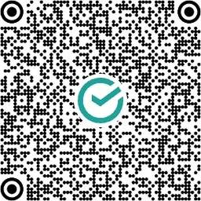

Помочь центру
Любая поддержка помогает нам быть рядом с теми, кому сейчас тяжело.
Как устроены пожертвования
Центр создан и действует при Патриаршем подворье храма Архангела Михаила. Пожертвования на дела центра принимаются на официальный счёт подворья. Переводя деньги по реквизитам ниже, вы переводите их на счёт подворья — так это и будет выглядеть в вашем банке.
Реквизиты для перевода
| Получатель | Православная религиозная организация «Подворье Патриарха Московского и всея Руси храма Архангела Михаила Русской Православной Церкви в г. Кубинка Одинцовского района Московской области» |
|---|---|
| ИНН | 5032056044 |
| КПП | 503201001 |
| ОГРН | 1035000011661 |
| Расчётный счёт | 40703810140710000078 |
| Банк | ПАО Сбербанк |
| БИК | 044525225 |
| Корреспондентский счёт | 30101810400000000225 |
| ИНН банка | 7707083893 |
| КПП банка | 773643002 |
В назначении платежа можно указать: «Пожертвование».
Куда идут пожертвования
Пожертвования идут на помощь людям, которые обращаются в центр: на поддержку и участие в их положении, на помощь через партнёров центра. Мы не обещаем, что деньги решают всё, — но именно они позволяют нам не отказывать человеку, которому больше не к кому пойти.
Оплатить онлайн
Оплата через СБП
Быстрый перевод через Систему быстрых платежей — прямо из приложения вашего банка.
Оплатить онлайн (СБП)Оплата по QR-коду

Наведите камеру телефона или банковского приложения, чтобы перевести пожертвование.
Автоматический счёт по реквизитам появится позже. Сейчас пожертвование можно сделать онлайн через СБП, по QR-коду или переводом по реквизитам выше.
Спасибо каждому, кто помогает. Благодаря вам человек, оставшийся один на один с бедой, слышит в ответ, что он не один.
Пожертвование полностью добровольное и ни к чему не обязывает. Каждый рубль идёт на поддержку тех, кому центр помогает.